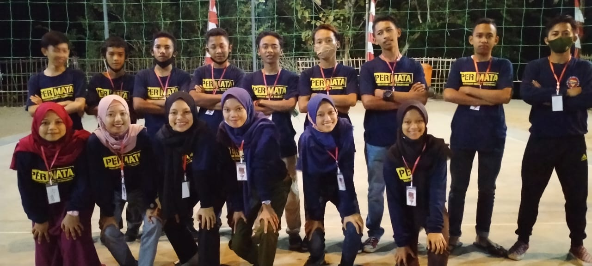
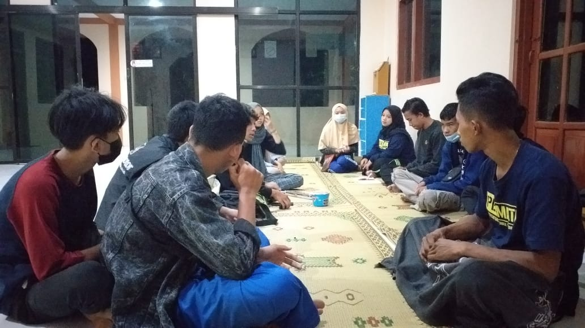
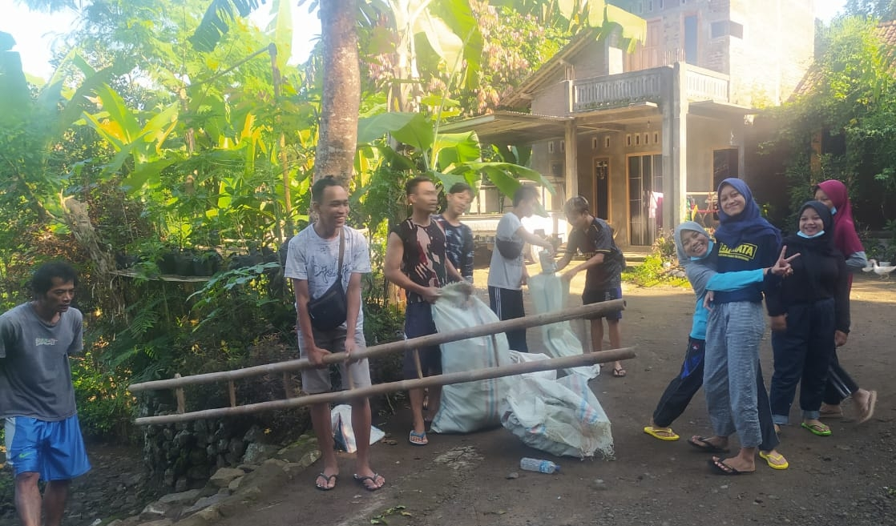

Deskripsi Organisasi

PERMATA merupakan organisasi karang taruna tingkat dusun yang beranggotakan pemuda dengan usia 15-30 tahun. PERMATA bertempat di Talunombo, Sidomulyo, Pengasih, Kulon Progo, Yogyakarta. PERMATA dibuat sebagai wadah untuk belajar berorganisasi pemuda. Seiring berjalannya waktu untunk menunjang tujuan dibuatnya PERMATA telah dilaksanakan berbagai kegiatan diantara sebagai berikut:
- Pertemuan rutin setiap malam minggu,
- Berkebun di lahan milik dusun,
- Membersihkan lingkungan degan kegiatan peduli lingkungan,
- Latihan karawitan untuk melestarikan budaya,
- Latihan bermain voli bersama organisasi DamarPutra,
- Ikut mengurusi dan merawat Wisata Puncak PuspaArdi,
- Melaksanakan pengajian untuk pemuda, dll.
Visi dan Misi
Sebagai tujuan dan landasan berdirinya organisasi maka dibuatlah visi dan misi organisasi sebagai berikut :
Visi
Mengajarkan Organisasi pada pemuda sebagai persiapan untuk hidup bersosialisasi di masyarakat, serta turut andil dalam pembangunan dan memajukan dusun Talunombo.
Misi
- Meningkatkan kepercayaan diri untuk bersosialisasi,
- Membangun relasi dengan sesama pemuda,
- Membantu pelaksanaan kegiatan di masyarakat,
- Mengenal dan belajar berwirausaha sejak dini,
- Memperbanyak dan mengamalkan ilmu berorganisasi.
Struktur Organisasi |
| Ketua |
: Aan Widianto |
| Wakil Ketua |
: Wahyu Manggala Putra |
| Sekretaris 1 |
: Bela Amallia |
| Sekretaris 2 |
: Eva Muslimah Hansof |
| Bendahara 1 |
: Ayis Sugiyanto |
| Bendahara 2 |
: Rina Damayanti |
| Anggota : |
| Iwan Atha Firmansyah |
Herry Purwoko |
| Diyan Restuningsih |
Rahmat Elwianto |
| Rudianto |
Tri Wibowo Mukti |
| Miftahul Huda |
Virly Budianto |
| Muhammad Darwanto |
Anisa Dea Pratiwi |
| Diyan Pratomo |
Ikhsan Rifki Aditya |
| Avianti |
Muhammad Ghozali |
| Jeni Fitriana |
Nurrahman |
| Tsani Sholihah Hansof |
Bayu Hermanto |
| Ade Saputra |
Novita Ristyawati |
| Tabah Wahyu Tama |
Riska Suryaningsih |
| Arif Rofi'i |
Khoirunnisa Agustin |
| Vuji Suprihatin |
Arif Hermawan |
Kegiatan Organisasi
Untuk menunjang pembelajaran organisasi banyak kegiatan yang telah dijalankan, entah itu sebagai pelaksana utama atau hanya membantu memberikan kontribusi pada suatu kegiatan dimasyarakat. Dengan diadakannya kegiatan kegiatan harapannya dapat sebagai media belajar langsung berorganisai dan hidup sebagai manusia sosial di masyarakat. Berikut beberapa contoh kegiatan yang masih rutin dilakukan hingga sekarang:
Pertemuan Rutin

Kegiatan ini dilaksanakan setiap malam minggu bertempat di Masjid Al-Amin. Inti dari acara ini adalah arisan serta menabung, serta ditambah musyawarah tentang kegiatan lainnya ditambah sharing pengalaman. Acara ini bisa sebagai antisipasi kegiatan tidak bermanfaat yang dilakukan para pemuda di malam minggu.
Peduli Lingkungan

Kegiatan ini merupakan kegiatan menjaga kebersihan lingkungan, mekanismenya kita membersihkan lingkkungan serta meminta barang bekas yang tidak terpakai kepada masyarakat. Kemudian barang bekas tersebut dipisahkan menurut jenisnya untuk dijual, didaur ulang dll. Dari kegiatan ini menghasilkan uang yang nantinya dimasukan kas dan suatu saat dapat digunakan untuk pembiayaan menjalankan suatu kegiatan.